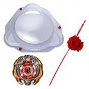

Beyblade Start Dash Set
TAKARA-TOMY released this set on March 31st, 2012 for approximately 2625 yen.
| Beyblade Start Dash Set | |
|  | |
| Number: | BBG-03 |
|---|---|
| System: | Beyblade Zero-G |
Content
- Samurai Ifraid W145CF Burning Ver. (Clear red Stone Face, Crystal Wheel, Track and Bottom, orange Chrome Wheel stickers)
- Zero-G Stadium Attack Type (Red clips)
- Zero-G Compact Launcher (Red)
Overall
This Set constitutes a good introduction to Metal Fight Beyblade Zero-G. The Zero-G Stadium Attack Type is an excellent arena for the swaying gimmick of this system, but it can be found individually and the other types of Zero-G Stadiums make good alternatives, as opposed to the dominance the BeyStadium Attack Type imposes on all other stadiums released in Metal Fight Beyblade classic gameplay. Samurai Ifraid Burning Ver. offers an interesting recolour, and the majority of its parts have competitive use in Attack (Ifraid and CF), Zero-G Attack (CF) and Stamina (W145). Consequently, this Set should be purchased if found at a lower price than the sum of its contents' prices.